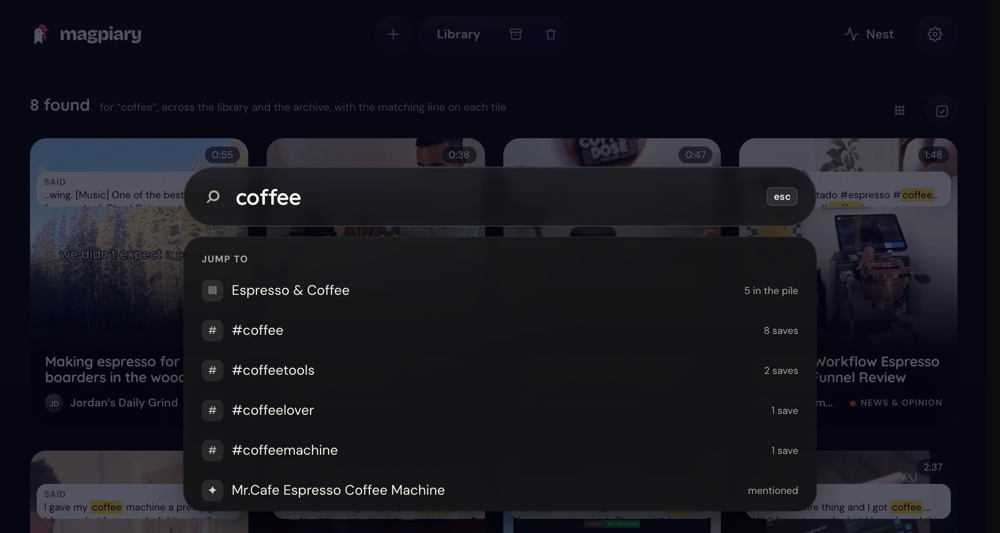

Search by idea
Find "that pasta with lemon" without the exact words. It searches what was said, shown and written.

Magpiary turns the reels and posts you save on your iPhone into a searchable library on your Mac. Describe what you remember, and it finds the post.
Find "that pasta with lemon" without the exact words. It searches what was said, shown and written.

Whatever a post mentions, Magpiary finds the link and checks that it works.
Saves gather by topic, with no AI key needed. Rename, merge or fix them any time.
A look back at what you saved lately, and what you might act on.
On your Mac, pick one post in a feed and save it. Nothing leaves your computer, and it never reads your cookies.
example.com/⇧⌘S this panel⇧⌘P pick a post
Open libraryChange shortcutsUnpair
A command line and an MCP server let Claude Code, Codex or any MCP app search your library. Off until you switch it on.
$ magpiary search "lemon pasta" --json $ magpiary show 101 $ magpiary mcp
A place to gather posts for a project or a trip. Only board items ever leave your Mac.
The first version is not signed with an Apple developer certificate, so macOS blocks it the first time. Open System Settings, go to Privacy & Security, scroll down and click Open Anyway next to Magpiary. Right-click and Open does not work on recent macOS. For now it installs for one Mac account only.
A Mac, and either an iPhone on the same home Wi-Fi or Chrome on that Mac. An Apple Silicon Mac is best, because that is where transcription is fast. There is no account to make, and you only need an AI key if you want summaries.
No, and we are not working on one right now. Magpiary is built around a Mac doing the work, with the iPhone share button or Chrome as the ways in. If you would want one, tell us in GitHub Discussions so we can see how many people are asking.
Yes, with the Chrome extension. In a feed, press "Pick a post on this page", then click the post you mean. It saves over localhost to your own Mac, never reads cookies, and has no standing access to any site. It only runs when you press its button. No page can promise it is invisible to a website, so we do not claim that.
Add it from the Chrome Web Store, then pin it from the puzzle-piece menu. In Magpiary open Settings, Saving posts, press Pair Chrome, and paste the one-time code into the extension. The code lasts 15 minutes and works once. No store? In Terminal run magpiary extension, which copies the extension to a folder and shows the steps: in Chrome open Extensions, turn on Developer mode, press Load unpacked and choose that folder.
Yes, if you turn it on. A command line (magpiary search, show, list, status, add, note), an MCP server and a skill let tools like Claude Code or Codex read your saves. It is off by default. In Settings, AI agents you choose what they may do, set daily limits, hide posts by tag and see an activity log. Reading is cooperative, because your library is a file on your Mac, so only give it to assistants you trust.
Goals are a private note about what you are working towards. The Digest, Ask and your AI assistants read them, and they are never sent to a board. Most popular and Trending are extra ways to order your library, with bigger tiles for the standouts.
Instagram reels and posts, Threads, YouTube videos and Shorts, Reddit, X and LinkedIn. Any other link is kept too, with whatever can be read from it. On the iPhone you share to Magpiary the same way from all of them, and in Chrome the extension covers the same sites.
Magpiary is free and open source. Summaries use your own AI key, and free keys from Google Gemini or OpenRouter work within their daily limits. In Private mode you need no key at all.
Magpiary is not signed with a paid Apple developer account, which is what stops macOS recognising the developer. The main install runs from Terminal. If a disk image is offered, the download page will walk you through the "unidentified developer" step.
No. Your phone keeps your saves and hands them over the next time it is on Wi-Fi with your Mac. Nothing is lost if your Mac is asleep or you are out, and Magpiary runs in the background whenever your Mac is on.
No. The phone holds it and sends it when it is next on a Wi-Fi with your Mac. You can also send it by tapping Magpiary in the Shortcuts app.
Yes. Search looks through what was said, what was shown on screen, the caption and the summary. It also finds saves about the same idea even when they never use your words, and that part runs on your Mac and uses no AI quota.
Not yet. The library only opens on your Mac for now. Your phone is one way posts get saved, and Chrome on your Mac is the other. Opening it from your phone is planned for later.
Only if you ask it to. Magpiary fetches posts without an account by default, and a blocked post gets a button to try with your own Instagram login. That login carries a small risk to your account, so it is never used for normal fetching.
Fetching can break until an update arrives, because it depends on how those sites work today. Magpiary checks for a new version once a day and tells you. Posts you already saved stay safe on your Mac either way.
In Smart mode, only the caption, the transcript and a few frames of each post, and only to the service whose key you added. The video itself never leaves your Mac. In Private mode nothing is sent.
Magpiary with no AI at all. Posts are still downloaded, transcribed on your Mac, grouped into piles and searchable. You just do not get written summaries.
Yes. Free keys have a daily limit, and Magpiary paces itself to stay within it and carries on the next day. If you add a second key, it moves on to that one first.
With a free Gemini key, Google may use what is sent to improve its products. With billing turned on, Google says it does not. If that matters to you, use another provider or Private mode, which sends nothing.
You are in Private mode, you have not added a key yet, or every key has reached its daily limit and comes back tomorrow. The post is still searchable by what was said. You can run the summary again from the post once a key works.
No. Magpiary sends no usage data and has no account and no server. The only routine call of its own is the daily check on GitHub for a newer version.
It is optional and carries a small risk to your account. The login is copied to a private file on your Mac and used only when you press the button on a blocked post. You can disconnect in Settings at any time, and Magpiary deletes its copy.
In one Magpiary folder in your home folder. It holds a database, the videos and photos, and a Markdown note for every post, so you can read your library without Magpiary.
Yes. Back up the Magpiary folder with Time Machine or any copy, because it holds everything. Your keys are kept separately in a private settings file on your Mac.
In Settings, under Privacy, you can forget your Instagram login, remove all keys or empty the Trash. To remove the app, run magpiary uninstall in Terminal, and your library stays. Add --delete-library to remove the library as well.
Your name, photo, colour, about line, links and topics, and the posts you add to a board you share with them. Only people on a board with you can open your profile. The rest of your library stays private.
No. Board posts are sealed on your Mac with the board's key before they leave it, so relays and storage services see only sealed data. Relays can see that your key posts to a board, but not what is in it.
Yes, under the MIT license. All the code is on GitHub, so you can read exactly what it does, change it, or keep it running without us.
It is young software, so expect some rough edges. Report what you find on GitHub, and tell us what you would like in Discussions.
Magpiary is an open-source Mac app that turns the reels and posts you save into a private, searchable library on your own computer. Save from your iPhone's share button or from Chrome, and your Mac downloads the post, listens to every word, picks out the key frames and files it with a summary and working links to everything it mentioned.
Then you find things by idea, not by remembering where you saved them. Everything stays in one folder on your Mac, with no account and no cloud. AI summaries are optional, use your own key, and send only a few frames and the transcript. In Private mode nothing is sent anywhere.
Download the latest release · Read the source on GitHub · Privacy policy
Magpiary wants to be the reference library for everything you collect online. Open source, so it can outlive anyone's plans.